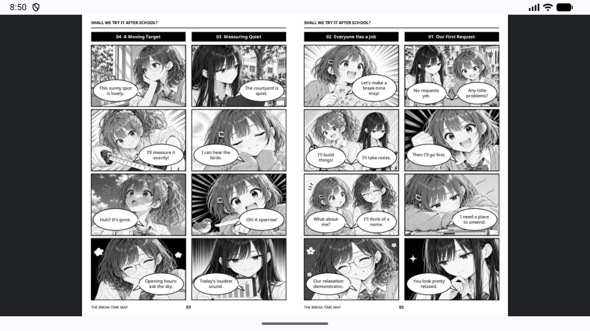
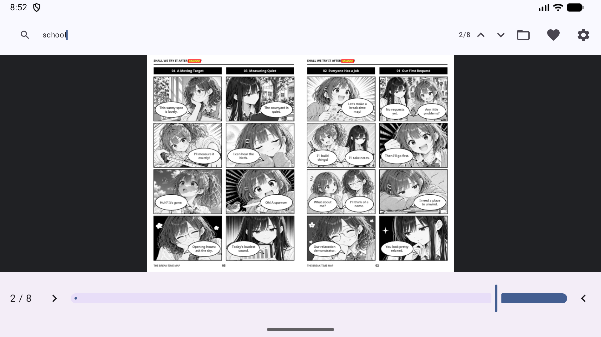
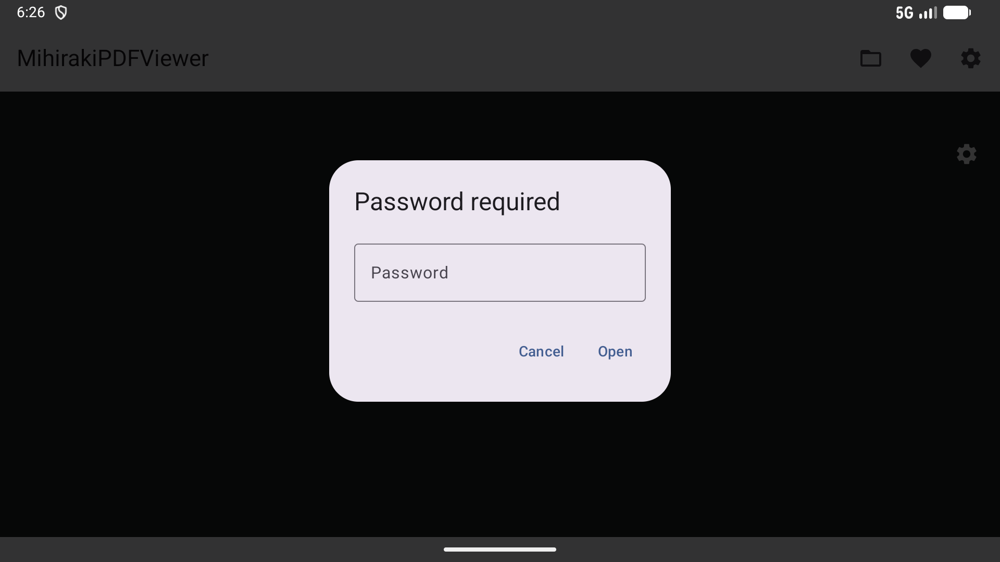
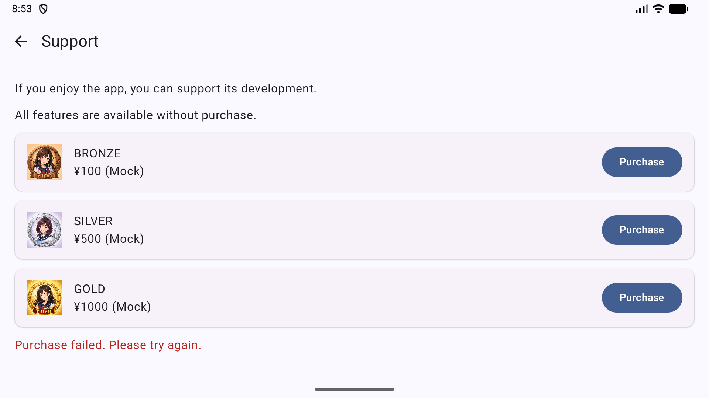
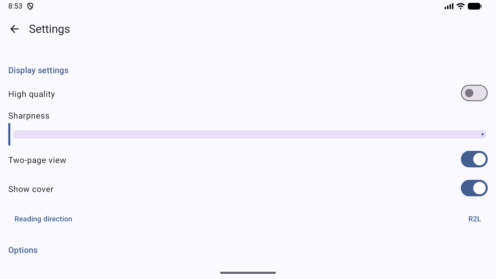

专为 Android 上的双页跨页和从右至左（R2L）阅读优化的现代 PDF 阅读器
左右并排查看双页。非常适合沉浸式阅读漫画和画集布局。
完整支持从右至左的阅读顺序，包括反向进度条和直观的滑动手势。
自动从 PDF 元数据中检测页面布局和阅读方向，实现零配置的优秀体验。
快速文本搜索，并在文档中提供准确的高亮显示（黄色背景与红色边框）。





使用以下示例 PDF 文件体验本应用：
共51份PDF，涵盖14种语言、17种语言及地区版本，每种3话。西班牙/拉丁美洲、巴西/葡萄牙、台湾/香港分别筛选。香港版采用标准书面中文，并非口语粤语版。下载时验证大小和SHA-256，并保留旧PDF。
《试试社》第1话・第2话
© 2026 驹色日和
本作品中由发布者享有著作权及其他许可权利的部分，在知识共享 署名 4.0 国际 (CC BY 4.0) 协议下提供。
https://creativecommons.org/licenses/by/4.0/
再利用时，请标明作品名称、作者名“Komairo Hiyori”、原作品发布源及协议链接，如有修改请予以说明。
本作品在文本、图像创作及翻译中使用了生成式AI。字体等属于第三方权利的素材适用各自的许可协议。本声明不限制对不受著作权等保护的部分的利用。
MihirakiPDFViewer 的设计核心即是保护隐私。
PDF 在您的设备上处理。下载示例、使用云服务、检查更新和可选的支持购买会使用网络连接。
免费且无广告
本应用完全免费使用。无论是否购买，所有核心功能（如 PDF 查看、跨页和搜索）均可无限制使用。
*可通过可选的应用内打赏来支持开发者。支持者将在“设置”屏幕中看到专属的纪念徽章。
示例 PDF 默认按最新一话优先显示。可切换为从第 1 话开始或从最新一话开始。所选顺序会保存，并在按语言筛选时继续生效。